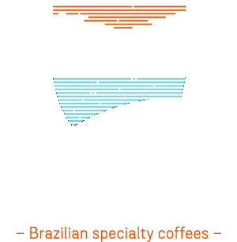

Brasil · Minas Gerais · Espírito Santo

Fazenda Um
Café verde da Serra da Mantiqueira (MG) e do Alto Caparaó (ES), com exportação direta e Direct Trade. Do talhão de Pink Bourbon da fazenda saiu o café do campeão mundial de barista de 2023.
- 38+variedades em Minas Gerais
- 16 a 17variedades no Caparaó
- 1.050 a 1.800 mde altitude nas duas regiões
- 2023campeão mundial de barista com o Pink Bourbon da fazenda
Café verde · safra 25/26
Nossos produtos
A Fazenda Um vende café verde, direto da fazenda, em sacas de papel kraft de 30 kg, FOB Santos ou Guarulhos. São 67 lotes em três linhas, cada uma com a sua saca. Peça amostras de 300 g antes de fechar a compra.

Competition e Experimental · 18 cafés
Selection
Os lotes mais raros da fazenda, secos em Dark Room e Cold Room: Bourbon Pink, Laurina, Heirloom Etiópia, Gesha e os experimentais de Mundo Novo.
Pedir amostras
Microlotes · 13 cafés
Microlots
Variedades raras separadas lote a lote: Gesha de quatro origens genéticas, Wush Wush, Arara, Aranãs e Bourbon Amarelo.
Pedir amostras
Varietais e blends · 36 cafés
Varietals & Blends
Variedades puras em Pulped Natural e Honey, das quatro origens, e os blends da fazenda para quem busca volume e consistência.
Pedir amostras

Nossas fazendas
Duas serras

Do talhão
à xícara
Cada assunto tem a sua página: os cafés, as duas fazendas, o Darkroom, a história e as fotos.


Fale com a fazenda
Exportação direta para a Europa e a Ásia, e Direct Trade com torrefações.